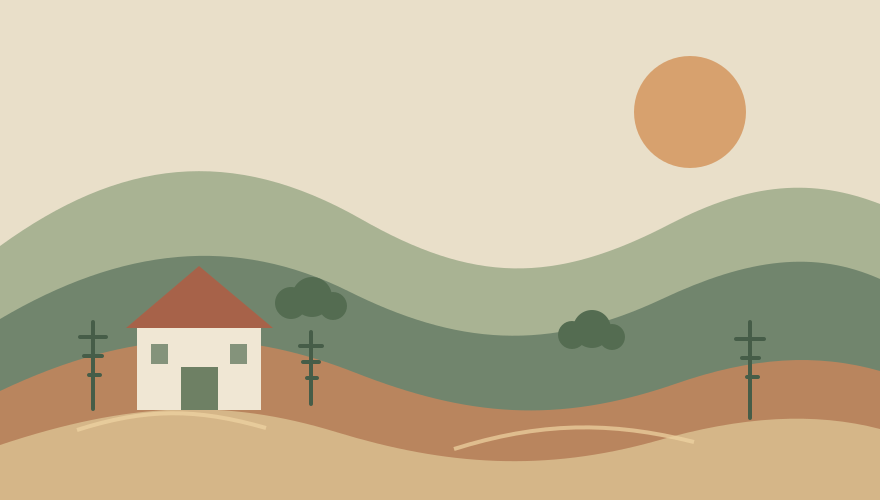
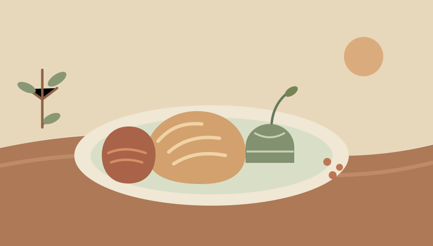
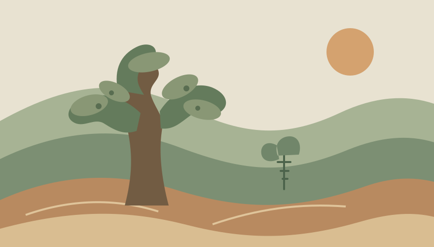
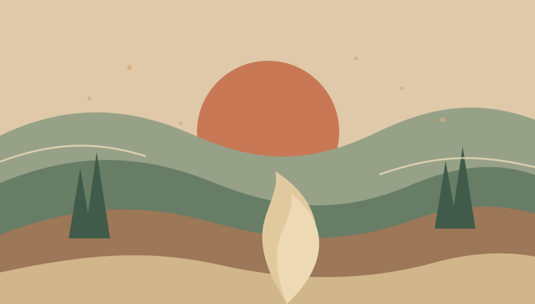

Frazione Cancelli · Fabriano, Marche
CASALE
COLLE COZZE
COLLE COZZE, una Country House nell’Appennino umbro-marchigiano
Un paradiso vicino a Fabriano, da scoprire con calma.
Eleonora+39 329 137 9195
Gabriele+39 346 763 7786

CASALE COLLE COZZE,
a Fabriano.
Un nome semplice, legato al suo luogo: Frazione Cancelli, nel territorio di Fabriano.
Questa pagina raccoglie i riferimenti essenziali per trovare e contattare CASALE COLLE COZZE. Per conoscere direttamente la struttura, le modalità di visita e qualsiasi dettaglio pratico, ti invitiamo a telefonare.
Vai ai contattiUn paesaggio,
quattro suggestioni.
Illustrazioni originali per evocare il territorio e la vita di campagna. Sono immagini illustrative, non fotografie autentiche della struttura.




Illustrazione 1 di 4: Colline e casale
IL NOSTRO INDIRIZZO
L’indirizzo,
a Cancelli.
Per indicazioni sull’indirizzo o per sapere se è possibile visitare la struttura, contatta prima CASALE COLLE COZZE.
60044 Fabriano AN
Italia